Full pipeline: simulate, convolve, invert
course-pipeline.RmdThis article walks through the Scripts/R/For*/ course
pipeline shipped in the 0-RTM-Suite repo alongside this
package: a consistent simulate → convolve → index → invert workflow, one
folder per canopy model (ForPROSAIL,
ForFoursail2, ForINFORM), plus
ForSPART (soil-plant-atmosphere, top-of-atmosphere) and
ForMARMIT (soil-only, moisture retrieval). Every figure
below is real output from an actual run of these scripts, not a mockup –
code chunks are shown but not re-executed when this article is built
(the full pipeline takes several minutes per folder), so treat them as
copy-paste starting points against your own installed package.
If you just want to run something, the fastest path is:
if (!requireNamespace("ToolsRTM", quietly = TRUE)) remotes::install_gitlab("caminoccg/toolsrtm")
library(ToolsRTM)
source("Scripts/R/ForPROSAIL/3-simulate_LUT.R") # ~10s, 100 simulations
source("Scripts/R/ForPROSAIL/4-inversion_ML.R") # a few minutes, 11 algorithms x 3 traits
source("Scripts/R/ForPROSAIL/5-inversion_DL.R") # a few minutes, needs Scripts/R/Pipeline/0-setup_python_env.R run once firstEverything below explains what each step actually does and why, using
ForPROSAIL (fourSAIL canopy model) as the running example,
then shows how the same pipeline looks for the other four
folders with just a couple of lines changed.
1. Simulate a LUT
Every 1-simulate_LUT.R (3-simulate_LUT.R in
ForPROSAIL specifically, numbered after that folder’s
pre-existing field-calibration scripts) does the same six things:
- Draw
n.samples(always 100) trait combinations viagetLUT(), optionally correlating one trait with another viacorrelatedValue()(e.g.CartrackingCab, since real leaf pigments co-vary). - Save a histogram grid and a correlation heatmap of the sampled traits, so you can see at a glance what actually varied and how.
- Build a soil spectrum –
get.marmit.rsoil()by default, so soil moisture is physically realistic rather than a flat guess. - Run the canopy model (
simulate_RTM(), which dispatches tofoursail()/foursail2()/inform()) for every LUT row. - Convolve to Sentinel-2A, Sentinel-2B, and PRISMA via
get.spectra.convolved(), and compute vegetation indices at native resolution and per sensor viagetIndices()/getIndicesSE2(). - Save diagnostic figures and a
1-datasets.rdsthat the next two scripts read back.
n.samples <- 100
leaf.model <- "PROSPECT-D"
canopy.model <- "fourSAIL"
correlate.traits <- list(Car = list(with = "Cab", scale = 1/4, r = 0.8))
# ... build LUT, apply correlate.traits, run simulate_RTM() per row,
# convolve to sensors, compute indices -- see the full script for detail.Trait distributions and correlations
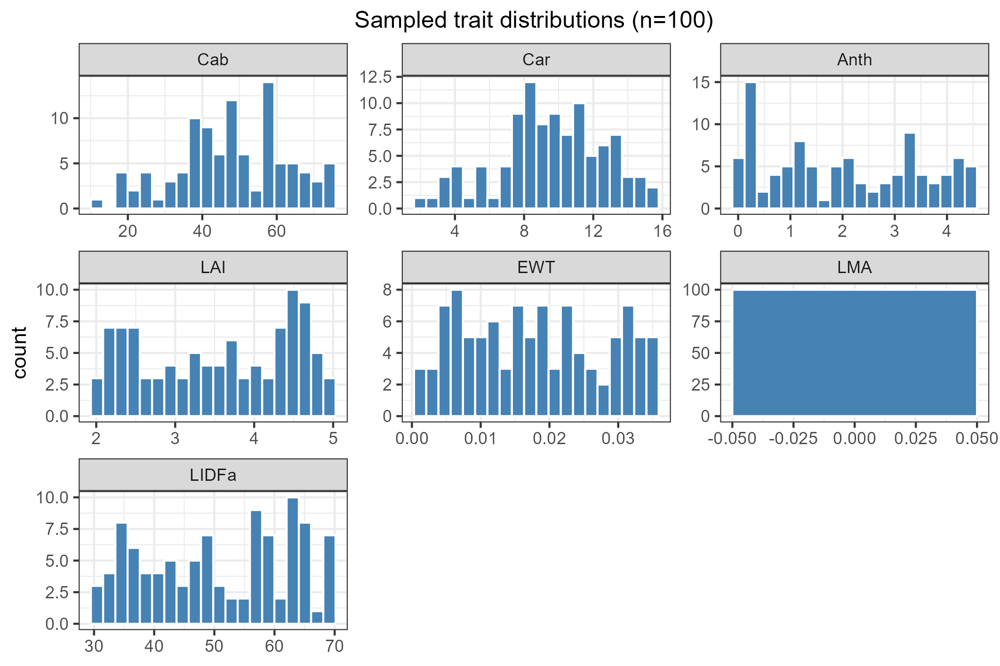
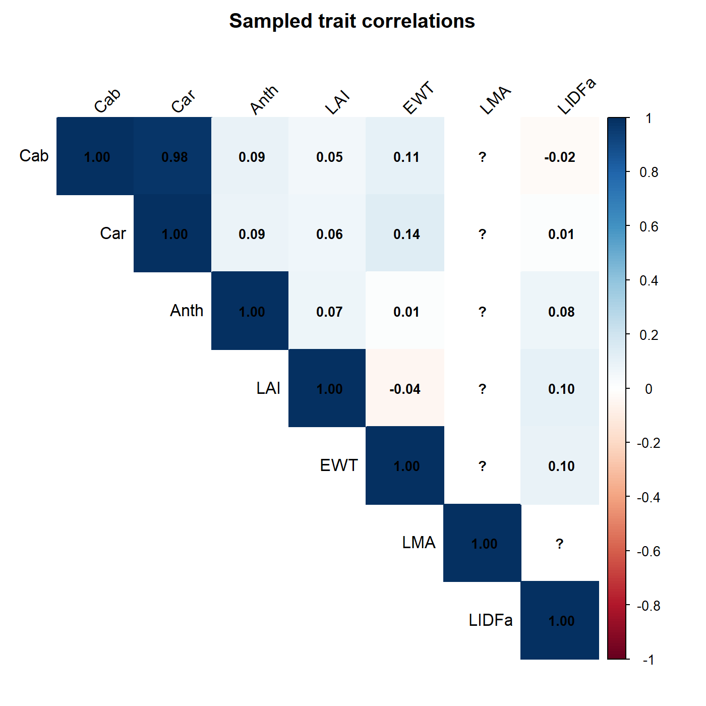
Note Car~Cab at r=0.98 – much stronger than
the target r=0.8 passed to correlatedValue(). That’s a
real, useful thing to notice when working with this function: the
realized correlation can run higher than the target, especially for
narrow-range traits, so always check cor() of the result
rather than trusting the parameter alone (both scripts print the
realized r for exactly this reason).
Reflectance by trait, and by trait percentile
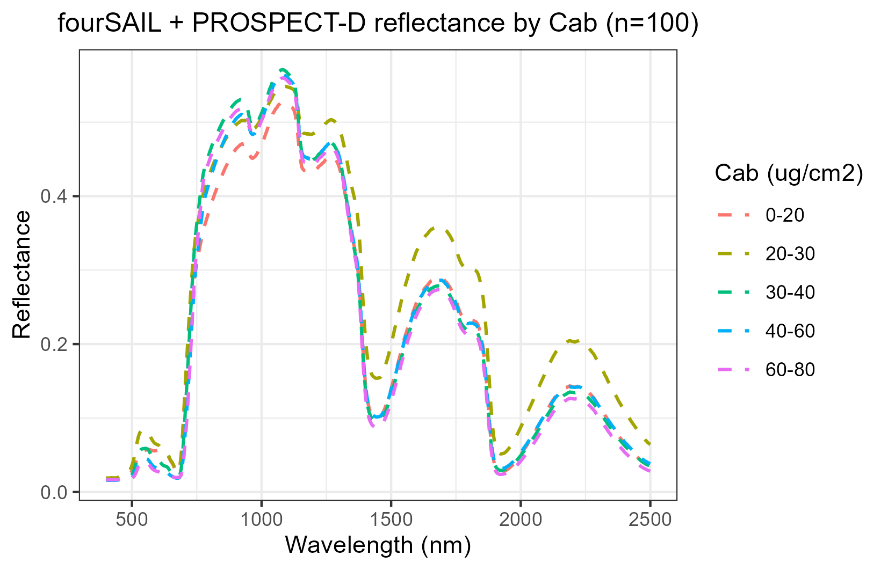
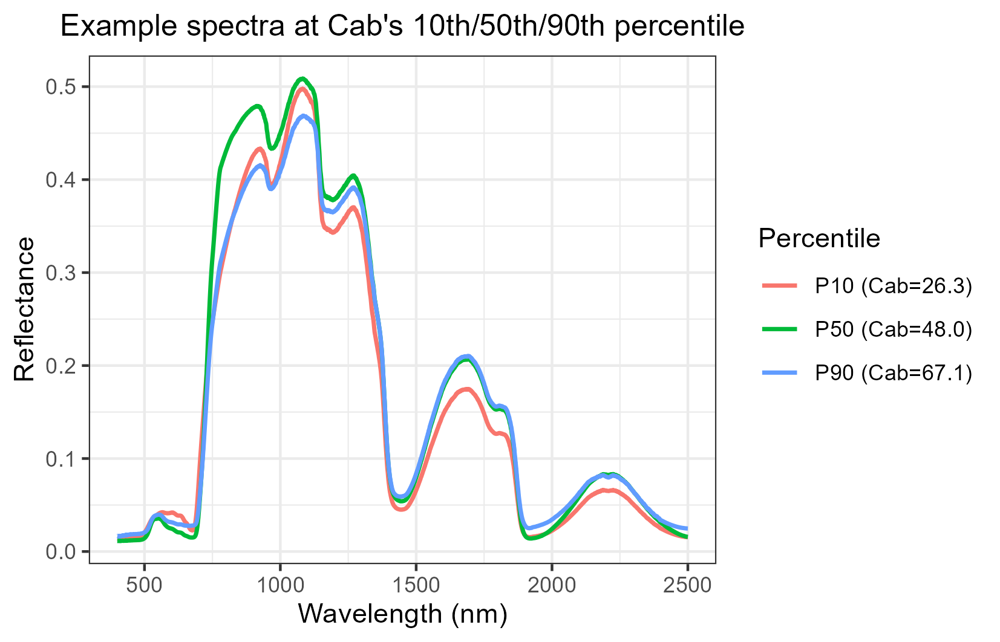
The first plot bins simulations by Cab and averages
within each bin – good for seeing the overall trend (reflectance drops
in the visible as chlorophyll increases). The second shows three
individual simulated spectra at Cab’s
10th/50th/90th percentile, unaveraged – useful for sanity-checking that
a single simulation looks physically reasonable, not just the
ensemble.
Sensor convolution
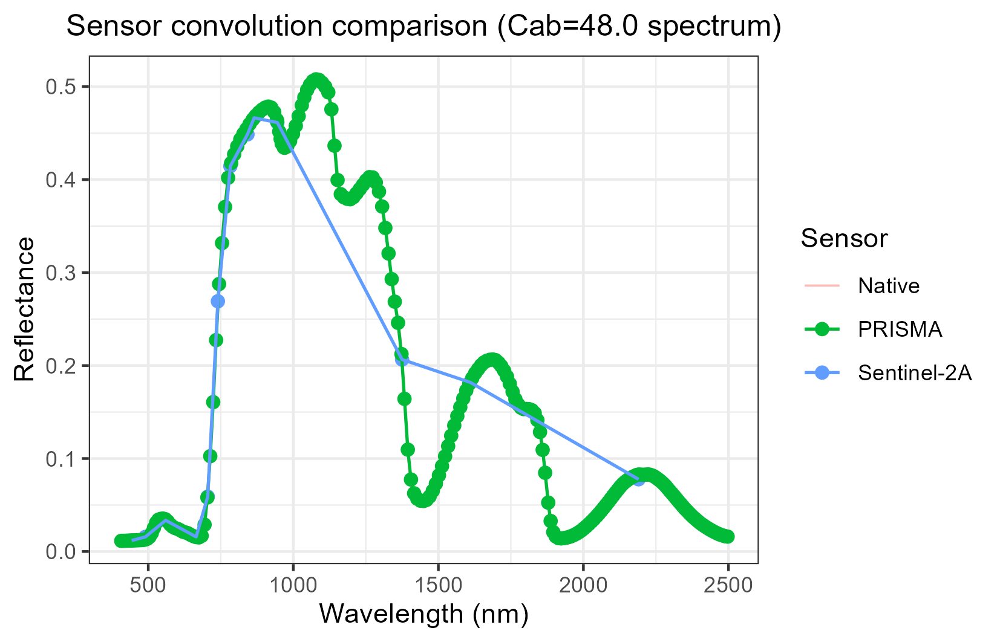
PRISMA (green) is dense enough to nearly retrace the native curve;
Sentinel-2A (blue) is 13 discrete bands. This is the same
get.spectra.convolved() used throughout the suite –
Scripts/R/Comparison/compare_RTM_models.R,
Scripts/R/Pipeline/1-simulate_LUT.R, and every
ForXXX folder all call it the same way.
2. Classic ML inversion
4-inversion_ML.R loops over target traits
(Cab, LAI, EWT) and 11 of
get.inversion()’s 12 algorithms (NN is skipped
here – caret’s nnet tuning grid is impractically slow against ~250
predictors at only 100 training rows; see the script’s comment for the
diagnosis). get.inversion(save.model=TRUE, save.path=...)
already saves the fitted model, per-algorithm statistics, and a
predicted-vs-observed scatter plot – the script doesn’t reimplement any
of that, just loops and aggregates.
target_traits <- c("Cab", "LAI", "EWT")
algorithms <- c("PLSR", "SVM", "RF", "GB", "Bayesian",
"AdaBag", "BRNN", "xGB", "RVM", "qLASSO", "Ensemble")
for (target_trait in target_traits) {
for (algo in algorithms) {
fit <- get.inversion(data = dataset, depVar = target_trait,
inputs = predictor_cols, algorithm = algo,
save.model = TRUE, save.path = model_dir)
}
}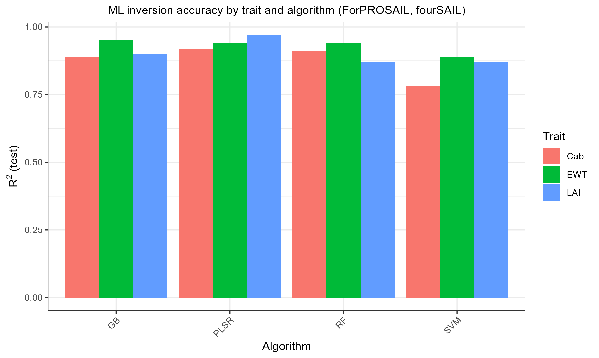
PLSR/SVM/RF/GB all succeed with R² between 0.78 and 0.97 across the
three traits (the other 7 algorithms need optional packages –
bartMachine, adabag, brnn,
xgboost, kernlab, rqPen – not
everyone has installed; they fail cleanly with a named-package message,
not a crash).
3. Deep learning inversion
5-inversion_DL.R is the same idea via
getMLmodel(), training both 'Hidden-layers'
and 'CNN' architectures per trait (TensorFlow/Keras backend
– run Scripts/R/Pipeline/0-setup_python_env.R once first to
provision the Python environment reticulate needs). One
thing worth calling out because it cost real debugging time while
building this: getMLmodel() calls
callback_early_stopping() without a package prefix, so
library(keras) must actually be attached (not just
installed) before calling it, or every fit fails with
could not find function "callback_early_stopping". Every
*-inversion_DL.R script starts with this exact block for
that reason:
local_venv_root <- file.path(Sys.getenv("LOCALAPPDATA"), "r-reticulate-venvs")
Sys.setenv(RETICULATE_VIRTUALENV_ROOT = local_venv_root)
Sys.setenv(WORKON_HOME = local_venv_root)
Sys.setenv(TF_USE_LEGACY_KERAS = "1")
library(reticulate)
py_require(packages = c("tensorflow", "tf-keras"))
library(keras)4. Same pipeline, different canopy model
canopy.model is a single variable at the top of
1-simulate_LUT.R – there is no separate script per model in
Scripts/R/Pipeline/, and the per-folder
ForFoursail2/ForINFORM scripts differ from
ForPROSAIL’s only in that one line (plus
leaf.model, since foursail2/INFORM additionally need a
handful of crown/canopy-geometry LUT columns fourSAIL doesn’t use – see
each folder’s 1-simulate_LUT.R for the exact list,
fraction_brown/Cv/sd/cd/h/etc).
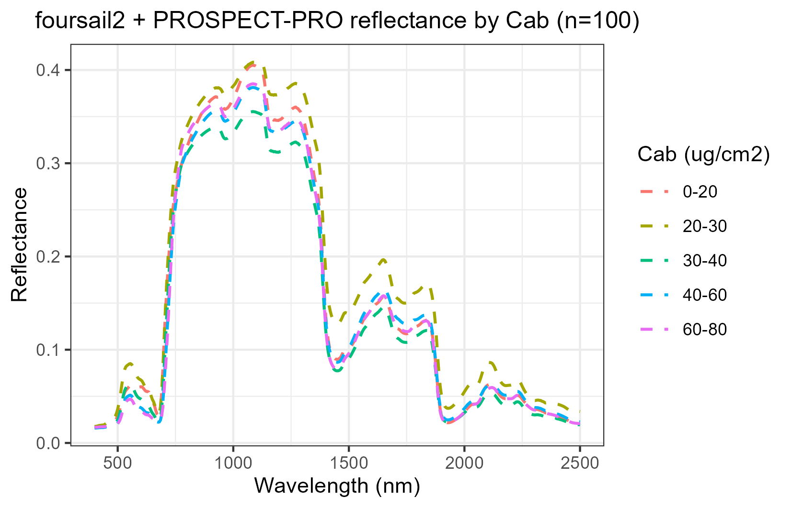
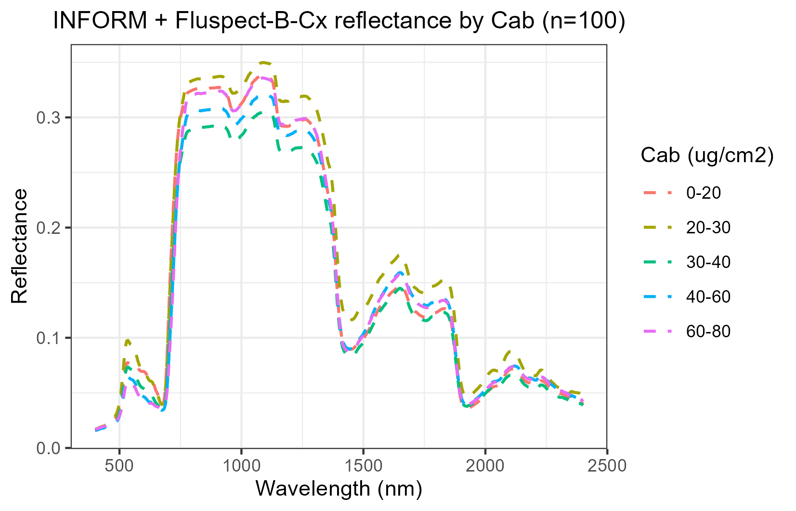
INFORM’s forest-level reflectance is visibly lower overall than fourSAIL’s turbid-medium canopy – expected, from crown/shadow geometry that fourSAIL doesn’t model at all.
A genuine finding, not a bug: INFORM’s LAI barely inverts
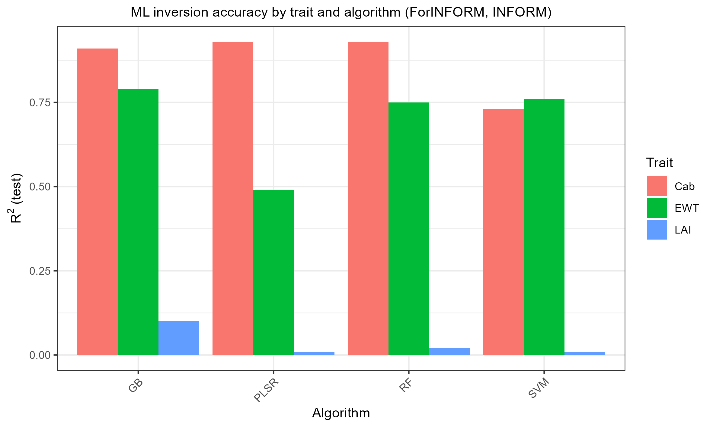
Compare against foursail2’s own summary:
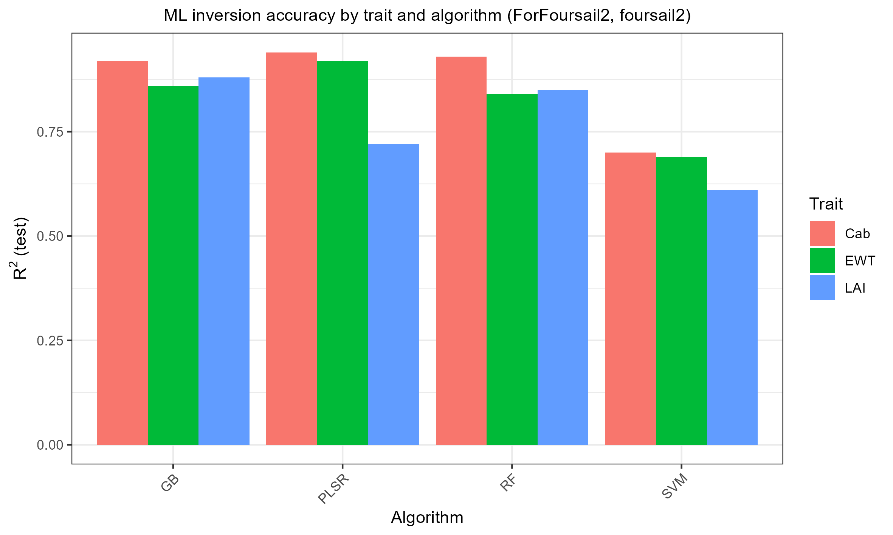
Cab and EWT invert similarly well in both. LAI is the story:
R²=0.61-0.88 with foursail2, but only R²=0.01-0.10 with INFORM. This
isn’t a bug – confirmed by checking LAI’s own variance and its
univariate correlation with reflectance (both real, just modest: r≈-0.26
with NIR). The reason is that ForINFORM/1-simulate_LUT.R
holds INFORM’s crown-geometry parameters
(sd/cd/h/LAIu – stem
density, crown diameter, tree height, understory LAI)
constant across all 100 samples, so LAI’s own signal is
weak relative to what actually dominates forest reflectance variation in
reality. Want better LAI retrieval from INFORM? Vary those
crown-geometry parameters too, not just LAI.
5. SPART: top-of-canopy and top-of-atmosphere
ForSPART is structurally different from the three
canopy-model folders: SPART() returns TOC and TOA
reflectance already convolved to a chosen real sensor
(ToolsRTM::Sentinel2A.MSI/TerraAqua.MODIS,
etc, both bundled) in one call – there’s no separate “simulate native,
then convolve” step, so ForSPART/1-simulate_LUT.R runs
SPART() once per sensor per LUT row instead.
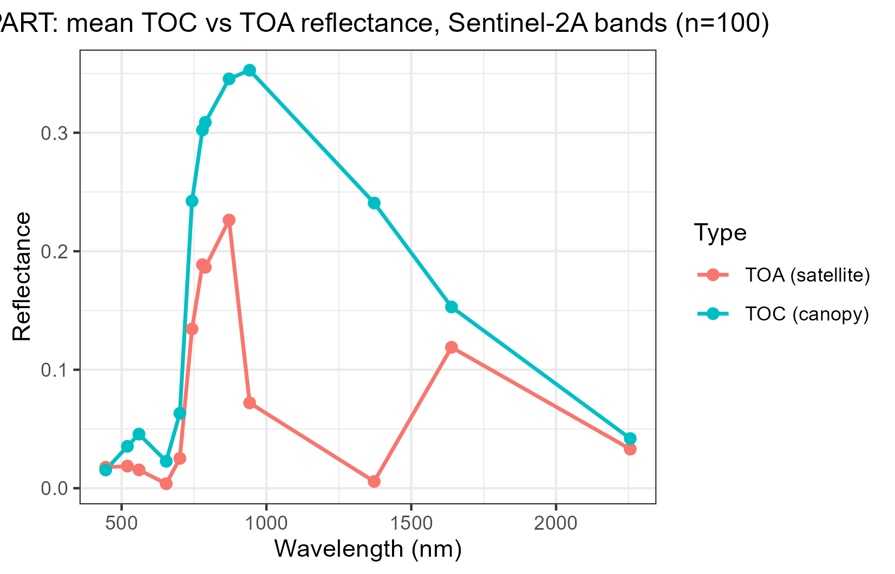
The atmospheric dip at ~1375nm (strong water-vapour absorption) shows up in TOA but not TOC – exactly what real atmospheric correction has to deal with.
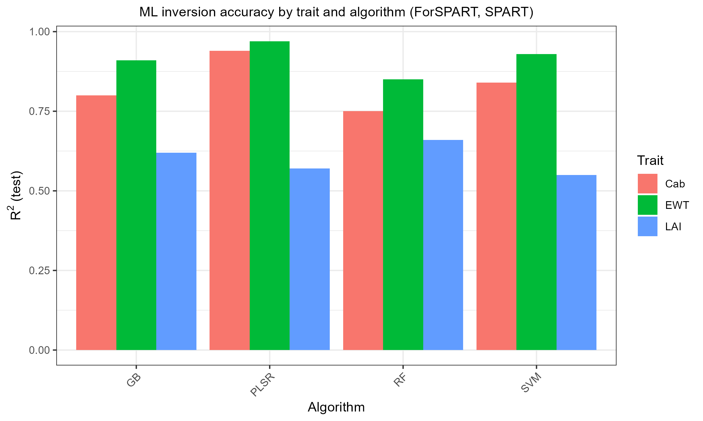
6. MARMIT: soil only, no vegetation
ForMARMIT is the odd one out on purpose: MARMIT has no
leaf or canopy model, so there’s no
Cab/LAI/EWT to invert. Its two
physical knobs are L (surface water film thickness, cm) and
eps (fraction of the surface that’s wet); the single target
trait is SMC (gravimetric soil moisture %, MARMIT’s own
physical output via sigmoid.soil()).
This pipeline runs on the bundled Bablet_2016 soil
database. All 8 official MARMIT databases (Bablet 2016, Dupiau 2020,
Humper 2015, Lesaignoux 2008, Liu 2002, Lobell 2002, Marcq 2012, Philpot
2014 – see the MARMIT
GitLab) are available directly from this monorepo’s own
databases/ folder (repo root) – pass
db_root = "databases" and
database = "<name>" to
get.marmit.rsoil() to use any of them, no download
needed.
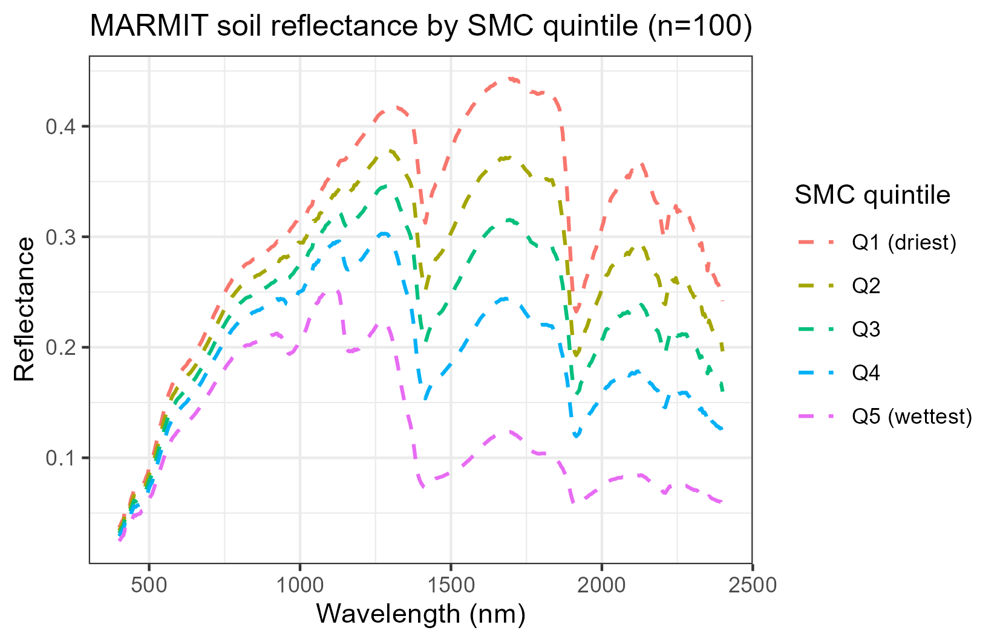
Textbook-correct: reflectance darkens monotonically with increasing soil moisture, with deepening water-absorption dips (~1450nm/1950nm) for the wettest quintile.
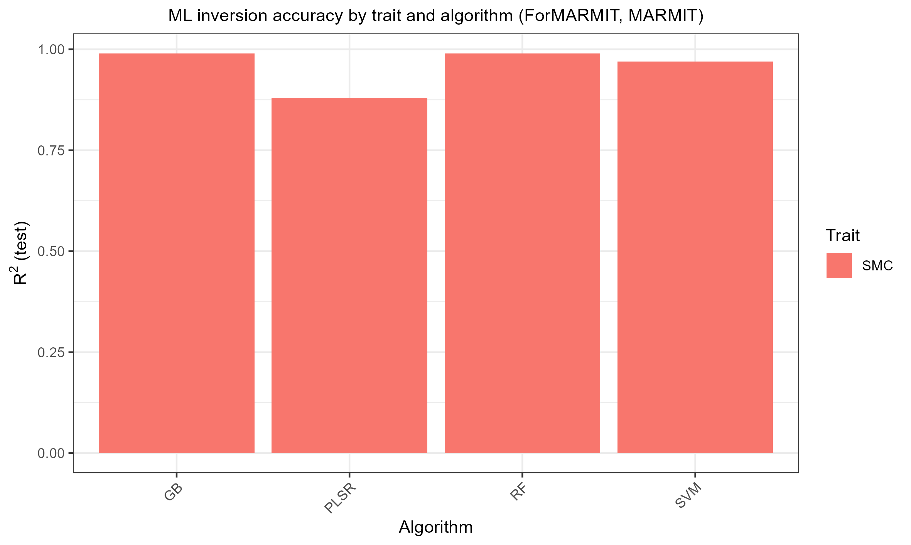
SMC inverts almost perfectly (R²=0.88-0.99) – unsurprising, since MARMIT’s reflectance response to moisture is close to deterministic physics, not a noisy proxy relationship the way trait retrieval from canopy reflectance usually is.
Where to go next
-
Scripts/R/Pipeline/README.md– the underlying generic simulate/invert scripts these course folders are built on. -
vignettes/articles/model-comparison-and-sensitivity.html– comparing models directly against each other, and which traits actually drive which wavelengths (Sobol/Johnson sensitivity indices). - For the full SCOPE energy-balance + fluorescence pipeline (including
a
Vcmax25/SIF experiment), see the SCOPEinR package’s ownscope-pipelinearticle.